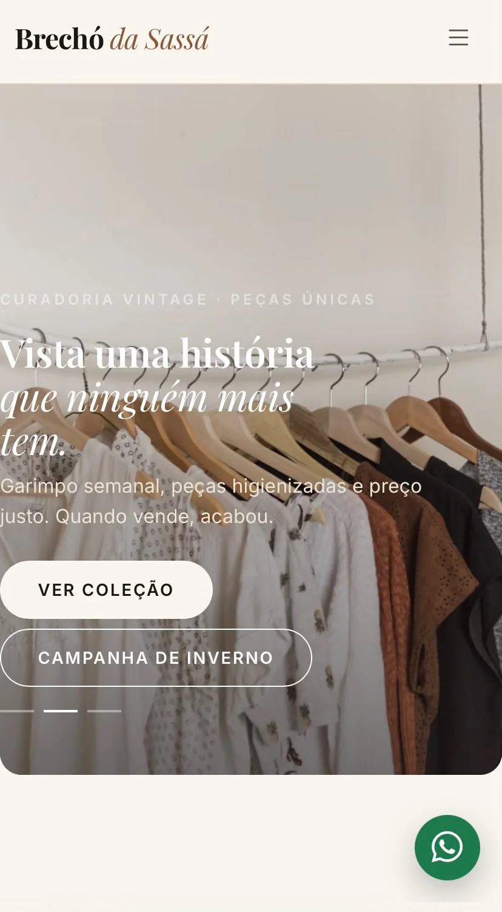

← Voltar aos projetos
Catálogo digital · Projeto selecionado
Brechó da Sassá
Uma vitrine online para apresentar a curadoria vintage e facilitar a descoberta das coleções.
Visitar projeto
O projeto
Uma ideia apresentada com clareza.
Objetivo
Apresentar a curadoria vintage e facilitar a descoberta das coleções.
Solução apresentada
Catálogo visual, identidade acolhedora e caminho direto para o atendimento.
Visitar Brechó da SassáTem uma ideia parecida?
Vamos conversar
sobre seu negócio?
Conte o que você gostaria de apresentar. A conversa começa sem compromisso.
Chamar no WhatsApp ↗